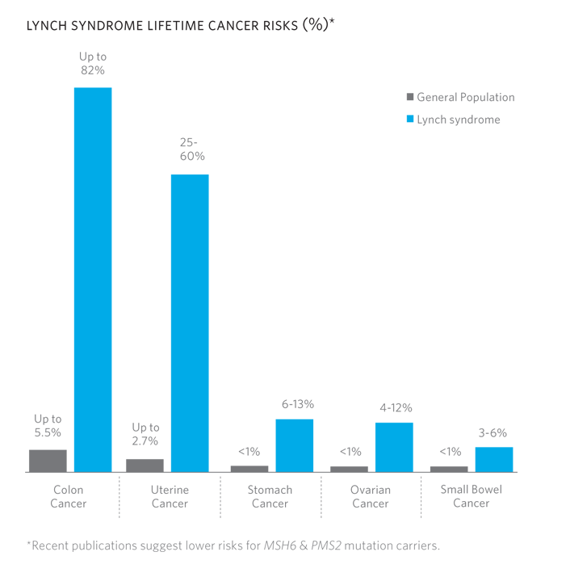

COLON AND RECTAL
CANCER
PREMIER GENOMICS TESTING IS DESIGNED TO OFFER MOST COMPREHENSIVE OPTIONS TO YOUR PATIENT'S PERSONAL AND FAMILY
New Solutions for Hereditary Colorectal Cancer
Identifying and understanding the genetic contribution to colorectal cancer (CRC) allows for individualized disease management, and provides insight into personal and familial risks for cancer. For the portion of colorectal cancer that is due to inherited causes (up to 10%), modified treatment, surveillance, and risk-reducing options may be appropriate.
Premier Genomics Offers testing for hereditary colorectal cancer :
Lynch syndrome: MLH1, MSH2, MSH6, PMS2, EPCAM
Lynch Syndrome
Lynch syndrome (previously known as hereditary nonpolyposis colorectal cancer or HNPCC) is the most common hereditary colorectal cancer syndrome and is caused by mutations in MLH1, MSH2, MSH6, PMS2, and EPCAM.
Mutations in these highly penetrant genes cause increased risk for cancers of the colon, uterus, stomach, ovaries, and others.
Target Population for Lynch Syndrome Testing
Lynch syndrome genetic testing may be warranted for individuals with a personal and/or family history of any of the following:
Recommendations for Patients with Lynch Syndrome

Colorectal Cancer Management
Uterine & Ovarian Cancer Management
Additional Cancer Risk Management
Frequently asked questions:
Support
Genetic counselors, laboratory directors, and medical directors are readily available to assist with test selection, case reviews, and result interpretation.
Results
A report will be generated and forwarded to your doctor in 10-14 business days.
Insurance
Most insurance will cover this genetic testing.

Premier Genomics is a CLIA and CAP certified lab that specializes in Pharmacogenomics Testing, Genetic Carrier Screening and Cancer Screening.
Our comprehensive team is made of board certified pathologists, pharmacists, molecular geneticists, and oncologists who have completed their training from prestigious institutions such as Baylor College of Medicine, University of California, and UT MD Anderson Cancer Center.
Phone: 1-888-416-8118
Fax: 1-866-248-5611
Email: DNATEST@PREMIERGX.COM